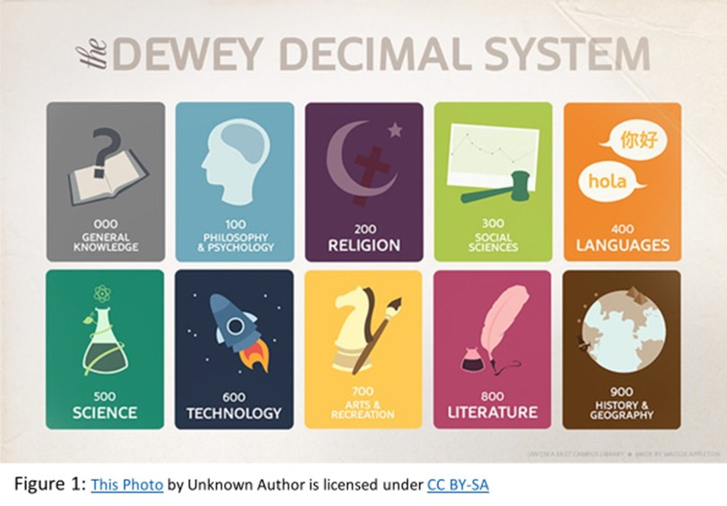

My name in Suzette Hefford I am forty-seven years old. I was born in Canberra ACT and travelled around with my family as my father held multiple jobs while I was growing up. I recently completed a Bachelor of Library and Information Management. This was an effort as I was juggling full time work and my family. I currently work as a Senior Library Officer at my local library in Murray Bridge South Australia. I found that after working a full day of work I have found I quite enjoy cooking.
My interest in IT has always been there. When I went to high school, I really enjoyed learning all about new technology. Back then we were still using DOS based systems with dot matrix printers. It was not until I entered the workforce that I was able to see just how much technology can help, from a basic word processor to using the first iteration of Word.
When I got my first job, I remember being so excited to get my first mobile phone (a Nokia), I was amazed by all the things it could do. From this point my interest in IT has grown. Now in my current job as a Senior Library Officer I help, particularly, seniors with their IT problems. This role will only increase as my Library has access to a grant. I have found that I am particularly showing my ‘student’ how to use their phones, and social media.
I was using Open University to find a course, I really wanted to complete something that was technology based. So by a process of looking at what was available I was able to limit my choices to RMIT. I have heard a lot of good things about RMIT.
I am hoping that I will be able to learn more about technology. Especially around areas such as programming that I do not have a lot of knowledge in. I am also hoping that I can use this course to further my existing employment opportunities.
My ideal job would be Senior Project Manager
This job requires the successful applicant to be able to lead a team to complete approved IT projects on time and in budget. This would involve engaging with various stakeholders both externally and internally to ensure that change management is undertaken effectively. Identifying risks, provide regular reporting on the progress of all IT projects. All the while ensuring that compliance with all Australian and international legislation and standards is followed. Overall, this position requires a successful applicant to be able to communicate effectively.
I find this position appealing as I would be able to manage a team, engage with stakeholders and still be involved in IT. This position would enable me to follow a project through from beginning to end. I would also like the challenge of delivering a project on time and in budget.
In order to even think about applying for this position I would need complete a degree in Information Technology, with a focus on project management. A change of job would be needed in order to gain more experience in managing a team (people). I would need to spend at least five years gaining experience in managing IT projects. It would be desirable to get this experience in a health-related field.
It would also be beneficial to sign up to IT related forums, magazine or even complete some work experience, internship to gain a greater understanding of trends across the industry.
I currently have a BA in Librarianship and Corporate Information Management so am fully aware of following Australian and international standards or relevant legislation. In my current position for local government, I am also fully aware of how organisational structures work. My title is one of Senior Library Officer, in the absence of the Team Leader the team will come to me for guidance with any problems that they may encounter. I have broad understanding of IT as I also provide sessions to members of the general public to help them with accessing digital technologies.
In order to even think about applying for this position I would need to:,/p>
There is no surprise around the results of these tests. I am aware that out of my current team I am the most assertive. I should say I have done several of these tests in my current role. The career test result suggests that my ideal job is Librarian, which is my current role.
I find myself deliberately holding back in answering in group sessions to give the other members a chance to have their say, in my head I already have an answer before the others. I know that I am the more assertive in my current team. As my working life has progressed, I am very conscious of making sure that all members of the team have a chance to have their opinions heard and addressed.
As I am a natural leader when becoming part of a team it is important that I am respectful of all the team members. Make sure that everyone has the opportunity to be heard.
The Murray Bridge Library has asked for a way to make the library accessible to his customers in a way to make searching for items easier. There is a suggestion to make use of Immersive technology to achieve this. As noted by whatis.com ‘Immersive technology is an integration of virtual content with the physical environment in a way that allows the user to engage naturally with the blended reality.”
The customer will make use of a mobile device to use a QR code to access a description as to what subjects are located on a particular shelf. Ideally this will help the customer to engage with mobile technologies.
The motivation for this project not only comes from the author’s own interest but also a need to increase the digital inclusion of the broader Australian community. According to the Australian Digital Inclusion Index of 2021 the Local Council area of Murray Bridge South Australia has a score of 64% this is a difference of -7.1% as compared to the national average, which is 71.1%. While this figure is still not great it is on the rise. This project is seen to increase the digital literacy of the Murray Bridge population. Using this product as a training tool to help our customers become comfortable with technology.
The Murray Bridge Library as with case with many western libraries makes use of the Dewey Decimal System to catalogue items. This system relies on the division of knowledge broken down into ten categories, there are then ten subcategories off this. For example, computers are classified as 005 Computer programming, programs, data or 006 Special computer methods. This classification system enables staff and customers to find items easily. The Dewey Decimal System is shown below.
Traditionally in Libraries the ends of shelves have made use of sign writing to depict what is contained on that shelf. This project will allow customers to point their smart device at a QR code at the end of shelf, a screen will then appear advising the customer what subjects are on that shelf as per the graphic above. The relevant subject can be drilled down to show the subcategories i.e. computer programs, 629 books about automobiles. The graphic that will pop up will show a picture depicting a car for example and list all the Dewey numbers which cover automobiles.
For this project to reach a successful conclusion an app will need to be created, at this point it is proposed that this app be called ‘What the Dewey?’ This app would need to be able to be used on both Apple and Android devices. There would need to be editing functionality for the library as shelving needs change the locations of where items are placed may change as well.
It would be worthwhile to add a chat function to the app, this would allow a customer to chat with library staff while they are looking for an item. The app would be able to link to the app that is already in use by South Australian libraries. This way if a customer cannot find the item on the shelf, they will be able to place the item on hold. Th app would need to be simple enough to use that it would only take no more than a five-minute instruction to use. /p>
The library would make use of technology training sessions to show customers how to use the app, as well as social media, library newsletter and the staff showing customers how to use the app. With the recent pandemic, South Australians have become very accustomed to making use of QR codes. Asking the general public to make use of a QR code for this app would not be a task that they would not be able to understand.<'p>
For the development of this app to get off the ground then there are several tools and technologies that will be needed. They include:<'p>
When developing the app for an Android system you can make use of the free developer kit. Apple also has something similar called the IOS Developer Centre, although this will cost some money.
There are several skills that are needed when developing an app, they include:
This app will help to bridge the gap in the digital divide especially in rural communities, by showing that the smart device can be used to find useful information. The community is already used to using QR codes with the use of QR check ins. Using this app will allow customers to be self-sufficient, filling them with a feeling of accomplishment. There will also be engagement with the staff as they explain the technology to the customer. The hope is that the project will be able to be shared across the South Australian Library network, which is made up of one hundred and forty libraries.